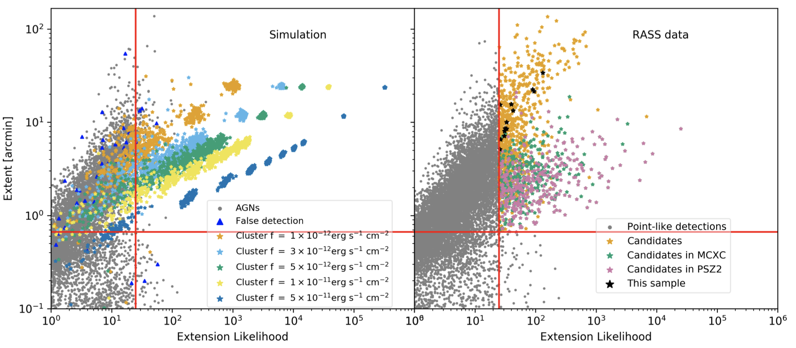
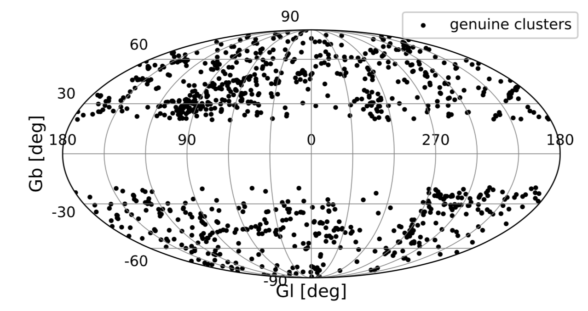
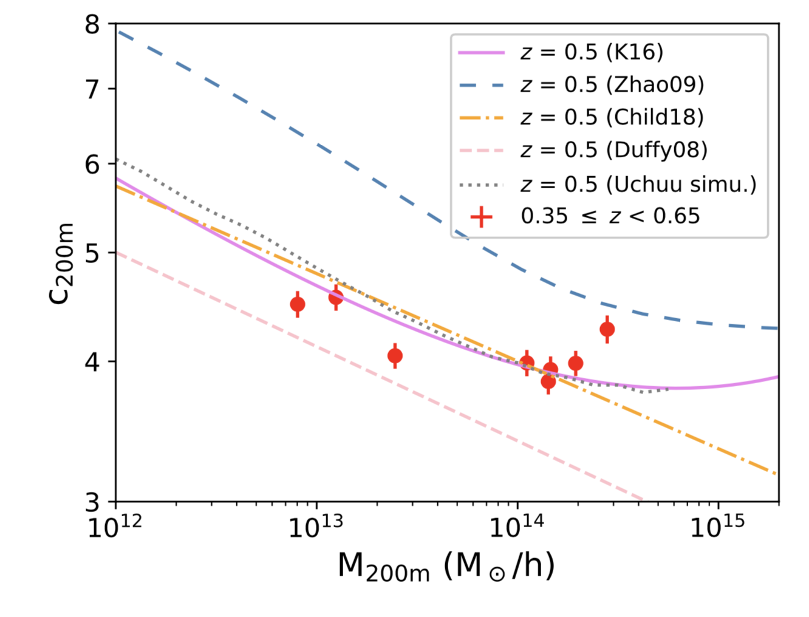
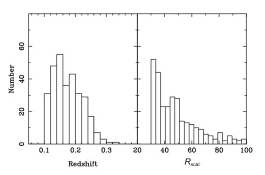
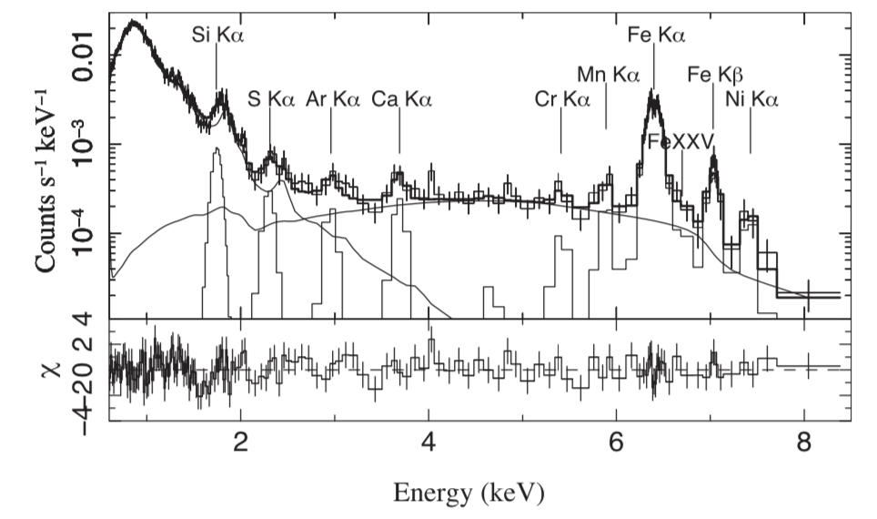

X-ray identification of galaxy cluster

Selection criteria for extended sources. The selection is performed in the extension likelihood - extent plane.

944 RXGCC clusters detected with the X-ray data from ROSAT All-Sky Survey in [0.5-2.0] keV. A RXGCC cluster as an example. RASS photon images (left), optical images, integrated count rates profiles,
and spectroscopic redshift histograms (right) for the galaxy groups in our pilot sample.
The optical images are from SDSS (composed of g, r, i bands)
gglens of massive halos

The stacked signal and model of the weak lensing of clusters. We detect the upturn of the mass-concentration relation predicted by Klypin ea. 2016. Optical identification galaxy clusters
We present an efficient method for detecting galaxy clusters by combining the WISE data with
SuperCOSMOS and 2MASS data. After performing star-galaxy separation, we calculate the
number of companion galaxies around the galaxies with photometric redshifts previously
estimated by the SuperCOSMOS, 2MASS and WISE data. A scaled richness Rscal >= 30 is set as
a criterion to identify clusters. From a sky area of 275 deg2 of the Sloan Digital Sky
Survey Stripe 82 region, we identify 302 clusters in the redshift range of 0.1 < z < 0.35, 247
(82%) of which are previously known SDSS clusters.

Distributions of redshift and scaled richness for the 302 identified clusters.
X-ray spectra analysis of AGN

The model of Vapec+MYTorus+Gaussians fitted to the Chandra spectrum of the nucleus of M51.